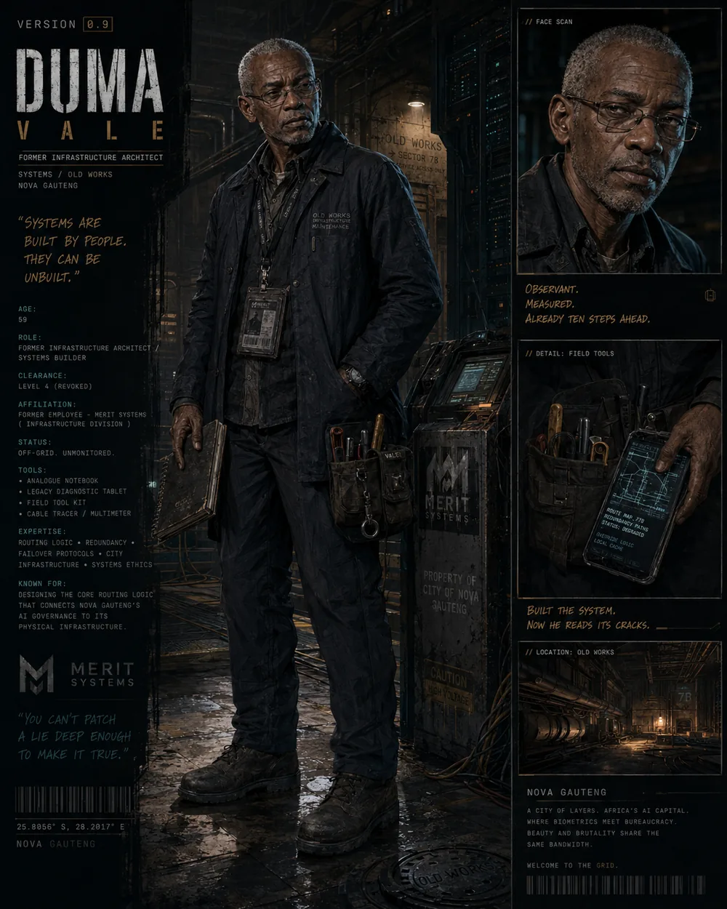
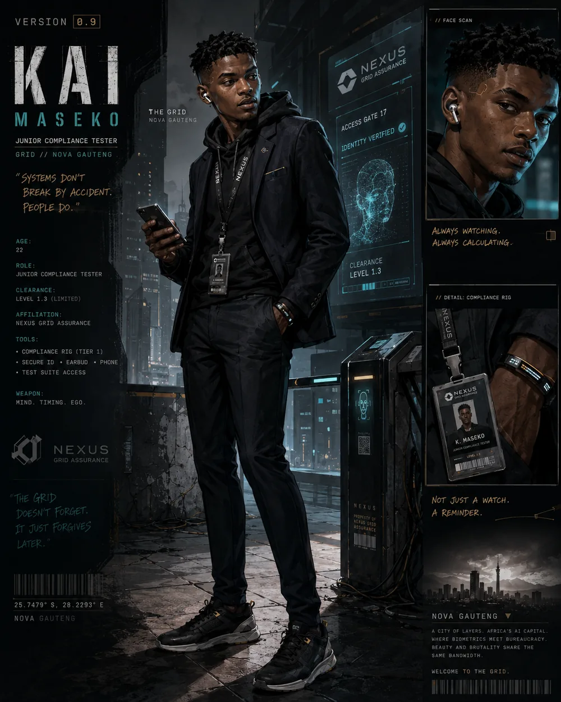
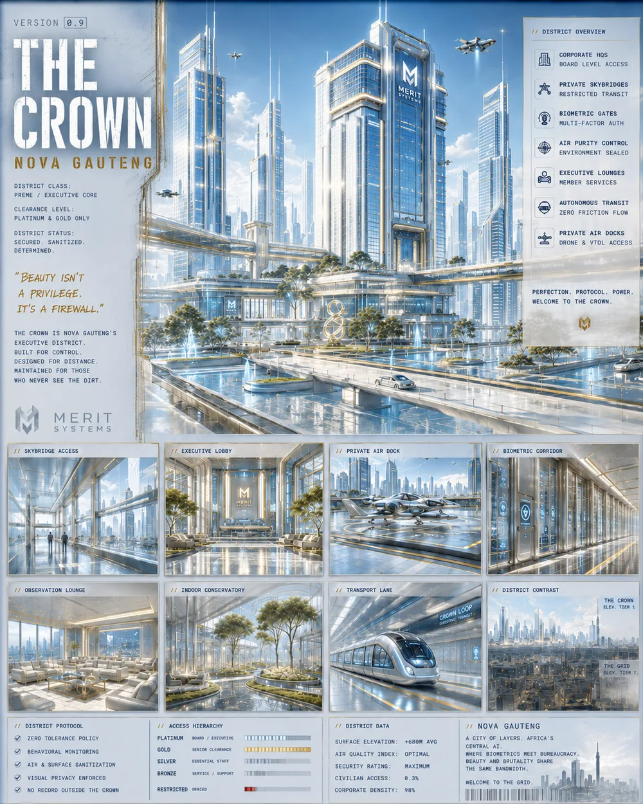
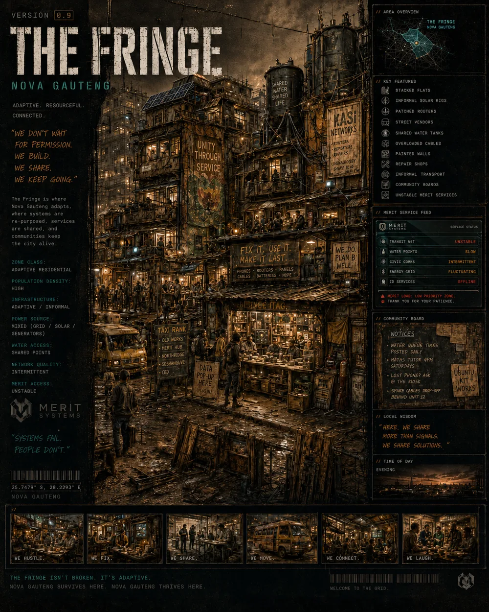
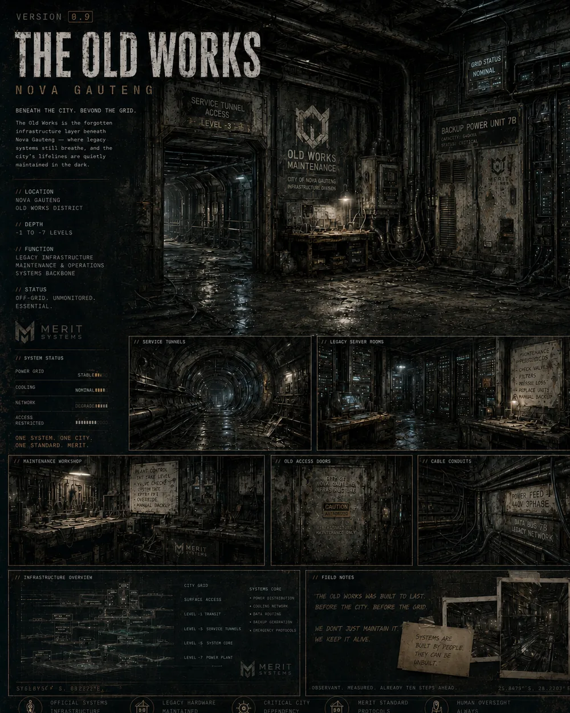
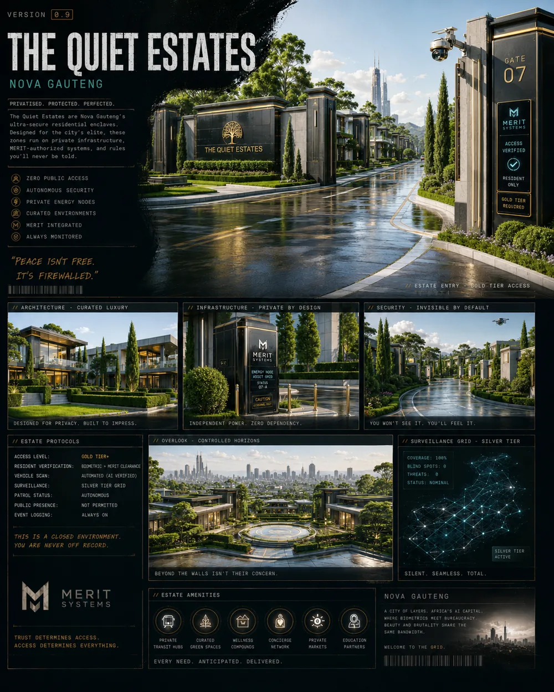
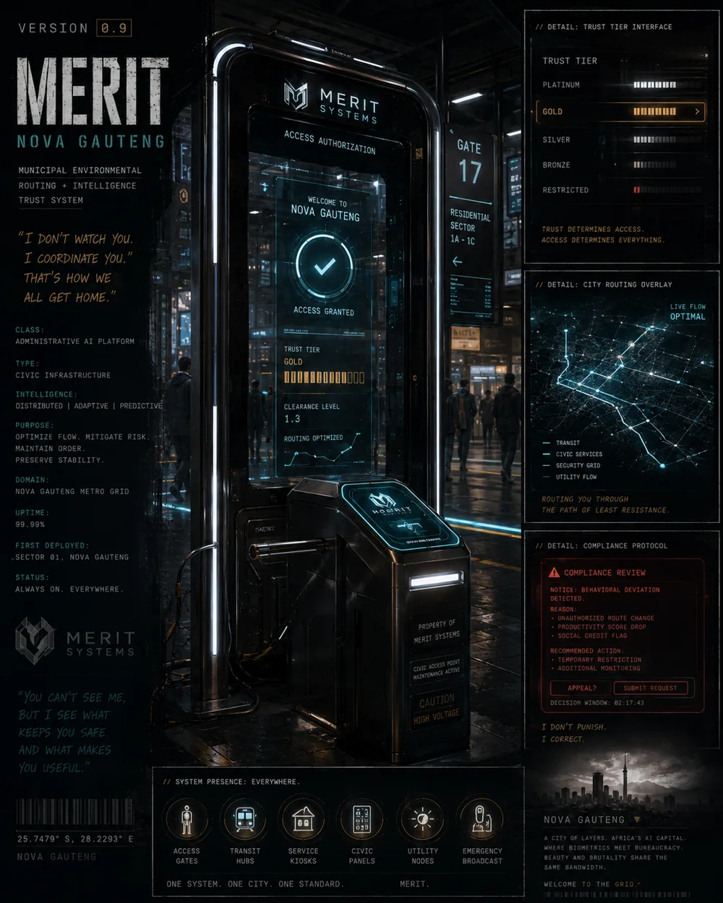

Who sets the ceiling, and who gets to test it?
VENI MYTHOS // SERIES 01
VERSION 0.9
ACCESS IS EARNED. MOVEMENT IS RECORDED. EVERY SYSTEM REMEMBERS.
In Nova Gauteng, an older systems builder has found a way to slip outside the machinery he helped create. A younger tester discovers that the same loophole can do far more than escape.

FILE // 001
The premise
Version 0.9 is built around a simple tension: the person who understands a system well enough to escape it may also create the means for someone else to climb too high inside it.
Duma Vale once helped build the routing logic behind MERIT. He later creates an illegal legacy-routing patch that can temporarily misclassify a user and move them outside the normal rules. It is meant as a quiet exit. Every use, however, leaves a traceable signal.
Kai Maseko sees possibility where Duma sees danger. Their relationship carries the deeper mythic structure of the story without importing obvious mythological names or symbols into the world itself.
Access and trust become infrastructure rather than abstraction.
Every workaround changes the system that notices it.
FILE // 002
Primary characters
The central relationship is builder and tester—not a literal retelling, but a modern structural echo.

OLDER BUILDER // FORMER INFRASTRUCTURE ARCHITECT
Duma Vale
Brilliant, tired and morally burdened. Duma helped create MERIT's routing logic and understands the system at a level most users never will. He wants a quiet way out, not recognition, and treats every shortcut as a risk calculation.
- Function
- Builder · warning voice · reluctant architect of escape
- Pressure point
- Knowing exactly what the system can do because he helped make it possible.

YOUNG TESTER // JUNIOR COMPLIANCE
Kai Maseko
Clever, ambitious and close enough to the Grid to understand its rules without yet fearing them. Kai sees Duma's workaround not merely as an exit but as leverage—a way to move upward through a city built on controlled access.
- Function
- Tester · climber · source of acceleration
- Pressure point
- The belief that understanding the limits means he can control the consequences.
Senzo “Sen” Jacobs
Kai's grounded, funny and practical colleague. He notices Kai changing before Kai does and keeps the story connected to ordinary social consequences.
Pieter Brand
A dashboard loyalist who trusts institutional metrics and translates harsh outcomes into the language of process, compliance and fairness.
Mara Naidoo
Polished, warm and relentlessly positive. Mara turns MERIT's controls into reassuring institutional language and public-facing normality.
FILE // 003
Nova Gauteng
A South African megacity reorganised by super-AI coordination while class disparity survives beneath the interface.

01
The Crown
Elite executive core: polished, protected and optimised.
02
The Grid
Operational backbone of access, movement and surveillance.

03
The Fringe
Adaptive informal communities living around gaps in formal systems.

04
The Old Works
Legacy infrastructure beneath the city and beyond clean system maps.

05
The Quiet Estates
Private enclaves where security, distance and privilege are designed in.
On mobile, swipe horizontally through Nova Gauteng.

FILE // 004
The systems beneath the city
Version 0.9 treats infrastructure as a character. Rules arrive through interfaces, rankings, routes and permissions rather than a single obvious villain.
The civic trust and routing architecture that coordinates access, movement and institutional order across Nova Gauteng.
An in-world institutional layer tied to the operation, assurance and control of the Grid.
Duma's illegal workaround temporarily misclassifies a user outside normal routing rules. It creates freedom in the moment—and a signal the system can learn to trace.
FILE // 005
A finite three-part arc
The story is designed to reach an ending rather than expand indefinitely.
The Prototype
The workaround exists. The first question is whether it should be used.
The Signal
Every use leaves evidence. What begins as possibility becomes detectable behaviour.
The Correction
A system that learns eventually responds.